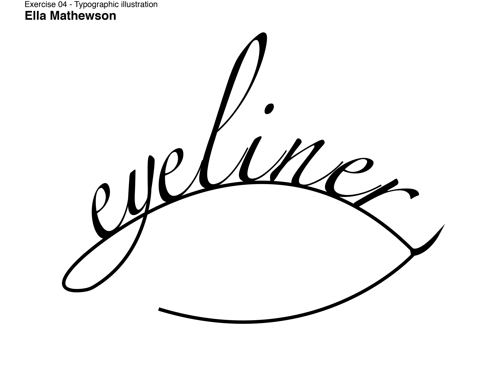
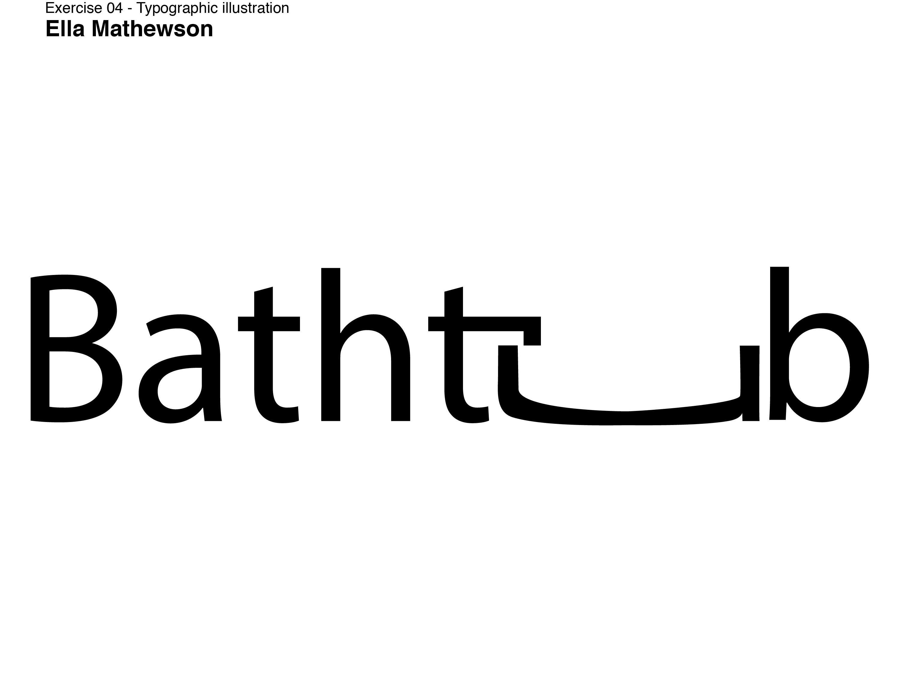
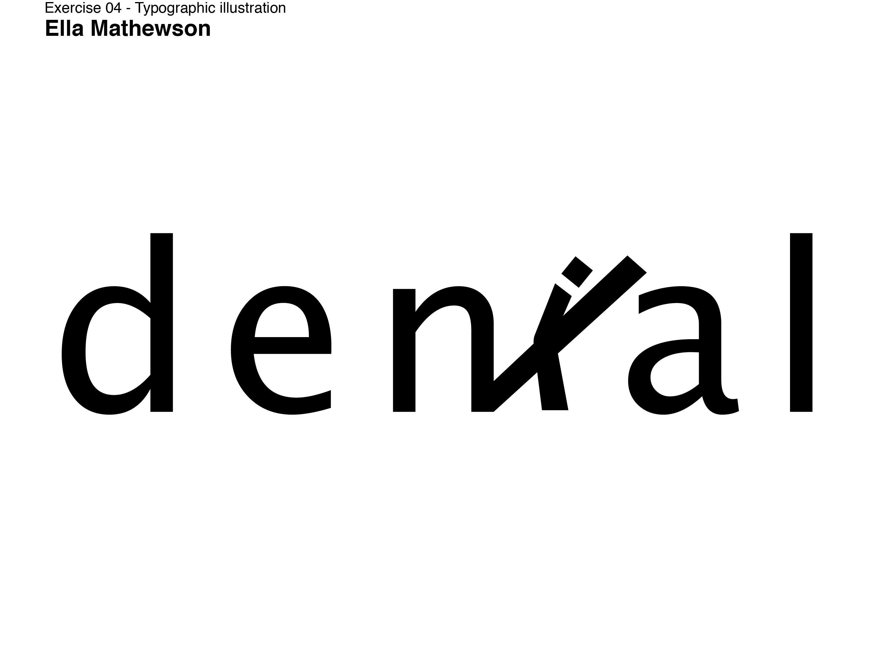

Ella Mathewson



These series of exercises were made to use typography to display an image. The first one features a handwriting font that morphs into the shape of an eye. The second one stretches the 'u' into the form of a bathtub, and the last one crosses out the 'i', which is changed to look like a person.
Although these are only exercises I did in class and not a final project, I found myself enjoying this a lot, and plan on designing more.